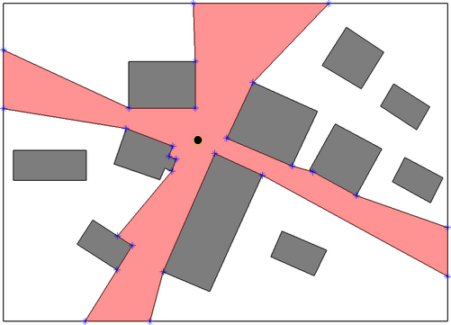

VisiLibity1
Planar Visibility Computations

About
VisiLibity is a free open source C++ library for 2D floating-point
visibility algorithms, path planning, and supporting data types. It is
intended for use in robot and sensor network design software. Other
possible applications include, e.g., manufacturing, facility location,
architectural/urban planning, games, and education. The entire library
consists only of a single compilation unit (one .hpp + one
.cpp file) with no dependence on 3rd party libraries. It is
therefore suitable for applications where simple visibility and path
planning computations are needed but the power of a larger computational
geometry library is not necessary.
Current Functionality of VisiLibity v1 in planar polygonal
environments with polygonal holes:
- visibility polygons
- visibility graphs
- Euclidean shortest paths for a point
- Python, Ruby, and Matlab bindings
Exact/arbitrary precision arithmetic is avoided and robustness is
achieved by considering 2 points to be colocated whenever the Euclidean
distance between them is less or equal to a user-defined tolerance
ε called the robustness constant. If the robustness
constant is chosen poorly or the scale of environment features varies too
dramatically, library functions can and will return errors. However,
provided the user tunes the robustness constant appropriately, we find
the library works well for a large range of useful environments.
Using
When possible, please cite VisiLibity. For your convenience,
here is a BibTeX item
@Misc{VisiLibity1:2008,
author = {K. J. Obermeyer and Contributors},
title = {{VisiLibity}: A {C}++ Library for Visibility Computations in Planar
Polygonal Environments},
howpublished = {\url{http://www.VisiLibity.org}},
year = 2008,
note = {v1},
}
C++
To use VisiLibity in your C++ program,
1. Clone the git repo and read README.md,
2. Place an #include "visilibity.hpp" directive at the beginning of
your program, and
3. Link your program with visilibity.cpp when compiling.
Here is the source
code documentation.
Python 2 and 3
From Linux or Mac terminal,
$ pip install visilibity # resp. pip3...
$ python # resp. python3
>>> import visilibity
>>> dir(visilibity) # Ta da!
See more instructions on running a demo at Yu Cao's
repo. I've never used these bindings beyond confirming that the demo
works, so I can't answer questions about them. However, if you have
information you would like to share, esp. how you overcame difficulties,
let me know and I can post it to the FAQ or contributions notes.
Ruby
See constributions list below to download the SWIG interface. I've never
used these, so I can't answer questions about them. However, if you have
information you would like to share, esp. how you overcame difficulties,
let me know and I can post it to the FAQ or contributions notes.
Matlab
MEX files are included in `src/` on the main GitHub repository. See
contributions list below for notes on use under Windows.
Help & Contributions
To report a bug/bugfix or ask a question, send me an
email with subject line of the form "VisiLibity1: ...". This project is
entirely volunteer work and I have many other demands on my time, so
please forgive slow responses. Be sure to check the FAQ
before emailing a question. Other comments you have are also welcome,
e.g., on what your application is, overall architecture of the library, or
possible future functionality.
Math
VisiLibity uses the C++ double type. In this floating-point system, a
discrete string of bits represents a number from the continuum of real
numbers. One indicator of how precisely a floating point system can
represent a real number is the machine epsilon (aka machine
precision or unit roundoff) defined as the difference
between 1 and the smallest exactly representable number greater than one.
In the IEEE 754 Standard for Binary Floating-Point Arithmetic, machine
epsilon for double precision on a 32-bit machine is
2-52 (roughly 2.22x10-16). Despite this small value,
it is well known that the inexact nature of floating-point representation
can lead to many problems, e.g.,
- overflow, underflow, round-off error
- divide by zero
- complex values
- loss of significance when subtracting nearly equal numbers
- addition and multiplication are both commutative, but not necessarily associative
- computational sequences that are analytically equal may produce different values
- small errors can grow very large during an iterative process
- evaluation of transcentental functions is approximate.
More details on problems associated with floating-point
arithmetic can be found, e.g., in "What
Every Computer Scientist Should Know About Floating Point
Arithmetic".
So why use floating-point arithmetic?
As Chee
K. Yap wrote in the "Handbook of Discrete and Computational
Geometry" (2nd Edition, p. 930),
"...fast floating-point hardware has become a de facto standard in
every computer. If we can make our geometric algorithms robust within
machine arithmetic, we are assured of the fastest possible
implementation..."
To achieve robustness using floating-point arithmetic, VisiLibity
operates using a technique called ε-geometry (AKA interval
geometry) in which geometric primitives are fattened by very small
amount ε. This involves the use of fuzzy comparisons in
which equality tests such as x==y are replaced by fabs(x-y) ≤
ε. When using VisiLibity, ε should typically be chosen
somewhere between machine epsilon and the smallest dimension of any
feature in the environment geometry at hand.
The algorithms and methods used in VisiLibity come mostly from these
sources: VisiLibity.bib
(BibTeX file)
Acknowledgements
VisiLibity v1 was developed originally as part of research funded by NSF
award 0626457 and ARO award W911NF-05-1-0219.
License
VisiLibity v1 is licensed under version 3 of the GNU Lesser General Public
License.
Links
Here are some other software packages you may find useful, though none
of these are officially associated with VisiLibity.
visibility-polygon-js: Visibility Polygons in JS
CGAL Visibility Polygons
LEDA: Library of Efficient Data types and Algorithms; VISPAK: Visibility algorithms in LEDA
MSL: Motion Strategy Library
MPK: Motion Planning Kit
RRT/RRT* implementation in C
Generic Geometry Library (part of Boost)
Stony-Brook Algorithms Repository
DIR3: Delaunay Incremental Refinement in 3D
Goemetry Junkyard